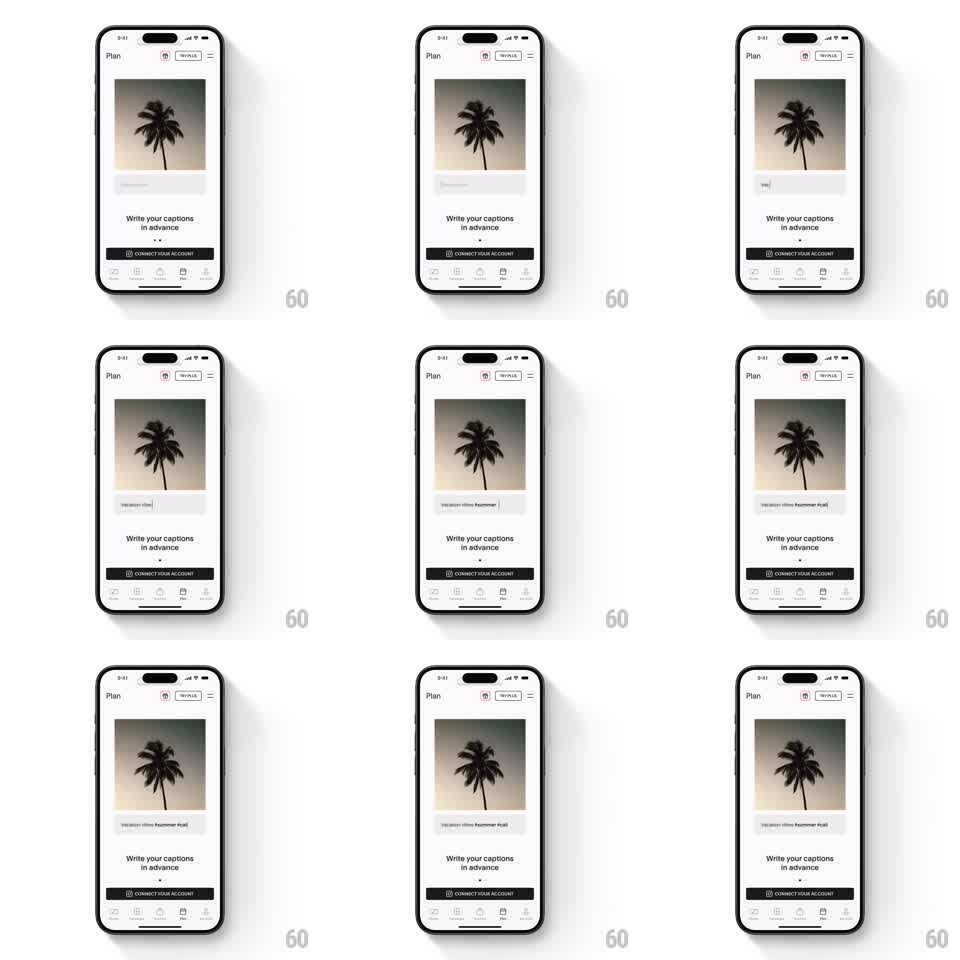

Media
Frame-by-frame

Rebuild this animation 1:1: Unfold's "Write your captions in advance" intro - a post card (palm tree photo) sits on the Plan screen while its caption field types a full caption character by character with a live cursor.

Rebuild this animation 1:1: Unfold's "Write your captions in advance" intro - a post card (palm tree photo) sits on the Plan screen while its caption field types a full caption character by character with a live cursor.
## Integration
Integration: stack-agnostic spec - springs given as stiffness/damping, timed motions as duration + curve; map every value to your framework and animation library of choice.
## Scene
Light planner screen: top bar ("Plan" title, calendar + "NEW PLUS" pill icons, hamburger), a post card with a photo and an empty caption input under it, headline "Write your captions in advance", page dots, black "CONNECT YOUR ACCOUNT" button, tab bar.
## Motion spec
Pattern: automated typewriter demo, ~4s loop.
- The caption input fades in (300ms) showing a blinking text cursor (500ms on/off).
- Text types in at ~55ms per character with slight random jitter (30-90ms), including spaces and hashtags, until the caption is complete.
- Cursor holds for 1s at the end, then the field clears (200ms fade) and the loop restarts.
- Everything else on screen is static.
## Calibration
- Typing speed must vary per character; constant interval reads as a marquee, not typing.
- The cursor sits at the text's trailing edge the whole time - never let it lag a character behind.
## Reduced motion
Caption fades in fully typed; no cursor, no per-character reveal.
## Don't miss
- The demo loops indefinitely but with a clear rest beat between runs; a seamless loop reads as a glitch.
- Only the input's text layer animates; the card, photo, and page chrome never move.